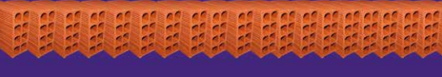

Antes de escrever contos, eu escrevia de tudo um pouco. Comecei pela
poesia, depois fui para os romances e passei também pela literatura
infantil. Um amigo que acompanhava meus escritos sugeriu-me que
escrevesse contos, que eram um bom exercício de escrita. Entrei em um
curso de escrita de contos com um outro amigo e descobri uma definição
genial para esse gênero literário: os contos são um “soco no estômago”,
pois atingem o leitor de forma direta e reta”. Confesso que penei até me
familiarizar com isso, ser direta, centrar uma trama por um olhar
apenas, como se fosse um recorte do tempo.
Um dia tive um sonho diferente, com uma história inspirada nas narrativas de zumbis a que meu filho adorava assistir, nas quais um vírus, ou algo assim, contaminava o mundo inteiro. Assim nasceu “A epidemia”, meu primeiro conto, que narra uma epidemia diferente e pela qual espero ansiosamente. A partir daí os contos começaram a aparecer de situações cotidianas, de palavras que despertavam para uma possível história, e não parei mais.
Paranoia Delirante nasceu há algum tempo, mas estava tendo seu período de descanso (os livros precisam disso para assentar as ideias e passar pela lapidação necessária) e é fruto de uma colheita de diversas temáticas.
“Sobre cores”, “De homens e cães”, “A travessia” e “Cale-se” são metáforas sobre os dias difíceis que atravessamos. Eles levam o leitor para um universo paralelo, mas não desconhecido de nós mesmos. “Gênesis”, “A epidemia”, “O mundo conectado” e “Low carb” transformam o comum em fantástico, criando uma atmosfera próxima e, ao mesmo tempo, distante do dia a dia; o cotidiano, as coisas comuns que, com um novo olhar, lançam-nos para dentro de nós mesmos, pois de alguma forma já ouvimos essas histórias antes (ou não?). É nessa vibração que “A Festa”, “No céu com diamantes”, “O deserto de cada um” e “Como viver uma vida gloriosa” se apresentam ao leitor. São contos de diferentes estilos e temáticas, mas que têm uma coisa em comum e que faz parte da minha escrita: uma crítica à sociedade atual.
O título do livro, Paranoia Delirante, é inspirado na canção Da esquina, do rapper Xis, imortalizada por Cássia Eller e também na Psicologia, pois paranoia e delírio são termos usados para definir quem sai de si ou tem pensamentos fora do comum. É óbvio que isso nem sempre é bom do ponto de vista médico, entretanto, com uma visão criativa, paranoia e delírio nos desprendem de nós mesmos e nos fazem viajar por outros universos a partir da leitura. Assim é que Paranoia Delirante pretende ser: instigante e provocador. A arte nos levará sempre mais longe.
A autora


Houve um tempo de banimento. Muitos passaram a se olhar de modo
estranho, e aquilo que aos olhos dos outros era diferente passou a ser
visto como o mal. Teria sido melhor o desprezo, o esquecimento. Que os
deixassem sozinhos, oras! Mas não, o escárnio, a perseguição, a raiva
implícita nos olhos e nas ações eram maiores que qualquer argumento.
Houve um consenso: deveriam ser banidos todos os vermelhos. Assim seria
melhor, garantiram. O vermelho, segundo eles, representava a ira, a
vergonha. Não havia mais lugar para eles. Os vermelhos partiram, então,
cabisbaixos e entristecidos.
Após a partida, uma grande festa se formou. Longe do vermelho fogo, do
encarnado, do escarlate, do vermelho cádmio, do carmim, do solferino e
de outros tantos tons que provocavam o ódio, viveriam em paz. Sim, o
ódio e a intolerância vinham daqueles tons quentes e coléricos. A festa
durou dias, até que todos repousaram, exaustos de tanta euforia
Após a celebração, o dia amanheceu e o azul iluminouo céu. O amarelo
raiou com o sol. O verde deixou as matas mais exuberantes. O marrom e o
abóbora não apareceram. Sem os vermelhos já não mais existiam. Sem
problema, melhor perder algumas cores que suportar a presença vermelha
entre eles. No final da tarde foi a vez da ausência dos lilases, que
também tinham o vermelho na sua origem e já não existiam mais. Tudo bem,
não fariam falta.
A noite chegou negra, gélida e a manhã rompeu pálida. Sem o vermelho
fogo não havia o que os aquecesse. Iriam se acostumar, era apenas uma
questão de tempo.
Das matas sumiram as flores e seus tons de rosa. Animais tornaram-se
monocromáticos. Pássaros, insetos, roedores, felinos, peixes, todinhos
de variações do mesmo tom. Não havia mais manhãs escarlates. Tudo ficou
harmonicamente triste, frio e tedioso. De longe, as cores que ficaram
observavam os vermelhos. Inúmeros tons, do rosa bebê ao encarnado mais
intenso, aqueciam-se e brilhavam. De mãos dadas, apoiavam-se uns aos
outros. Ah, que bobagem que eles têm luz e calor! Agora são novos
tempos, iremos nos acostumar, pensaram juntos os azuis, os verdes e os
amarelos, seguidos pelos beges, que, sem os vermelhos, haviam
empalidecido ainda mais.
Com o passar dos dias e a frieza, a neve branca passou a cair e ferir os
verdes e congelar os azuis. Os amarelos, já sem forças e impotentes,
renderam-se: sozinhos não conseguiriam nada. Estenderam seus raios até a
casa dos vermelhos. Tocaram levemente um deles. Os vermelhos, receosos
de mais dor, recuaram, mas os amarelos, pálidos e enfraquecidos,
esgueiraram-se humildemente, como implorando o calor. Os vermelhos se
compadeceram dos irmãos adoecidos. Abriram-se e logo tudo ganhou suas
reais cores novamente. Houve uma grande festa, que durou vários dias, e
um arco-íris rasgou o céu com seus espectros de luz. A festa das cores.
Dizem que teria sido assim. Teria sido assim.

Era melhor não dizer nada. Quem muito diz se compromete, e isso não é
bom para café-pequeno. A corda sempre arrebenta do lado mais fraco. A
palavra é de prata, mas o silêncio é de ouro. Em boca fechada não entra
mosca. O peixe morre pela boca. Eram os antigos que falavam e eles
sabiam das coisas
Era melhor não dizer nada e calou-se. Falar até que falava. Do tempo, da vizinha, aquela sem-vergonha que andava com qualquer um, do cunhado subversivo, comunista safado, que vinha com essas ideias de manifestação, greve, povo, e só apoiava isso porque tinha emprego público; queria ver se fosse em outra situação, essa situação de ter que ficar de boca calada, de engolir sapo de mãos amarradas. Cada um sabe onde é que apertam seus calos.
E os seus calos doíam. E como doíam. E olhou o que era. O que era mesmo? E já não conseguia mais falar porque desaprendera a palavra que grita. Olhou sua boca muda, suas mãos atadas, seus pés feridos. Não se reconheceu. Quem era mesmo? Abriu a boca na tentativa do grito. Saiu um sussurro, um fio de voz. Ali ainda a palavra habitava, o dito, o berro. Largou de mão, pisou o chão e foi pra rua, pra praça, com seus pés feridos, suas mãos atadas, com a palavra num fiapo de voz, esperando se juntar a outros fiapos para tecer uma teia que gritasse aos berros a dor de todos

No início foram se esquecendo de quem eram. Tornaram-se raivosos e
coléricos. Defendiam seus territórios com a ira dos bárbaros. Deixaram
de ser uma grande unidade e dividiram-se em pequenos grupos. Seguiam
líderes selvagens, os que alimentavam seu ódio. Os olhos sofreram uma
cegueira ímpar: perderam o olhar periférico, ficaram apenas com a visão
limitada a uma única direção. Esse foi realmente um grande mal, que os
segregou em grupos menores ainda, que iam surgindo das inúmeras
subdivisões que aconteciam. Quanto menos enxergavam, mais se dividiam.
Com o tempo os grupos foram se dissolvendo. Passaram a andar quase
solitários, isolados, vagando sem rumo. Repeliam-se mutuamente quando,
ao acaso, encontravam-se. Ou havia o embate, ou a fuga e sempre o medo.
Desconheceram-se. Até que chegou, junto com o acaso, com o cansaço dos
caminhos solitários, com as feridas do ódio, a saudade do que não tinham
mais. Chegou o inesperado encontro de olhos, aqueles mesmos olhos que
pouco viam além de si mesmos. Os olhos se encontraram com estranhamento
e, por breves instantes, não houve ódio, embate, fuga ou medo. Apenas o
olhar vazio, de um vazio tão grande, que era quase um sem fundo
qualquer. Foram instantes e só isso foi. Seguiram seus caminhos
arrastando o peso da solidão das certezas.
É muito fácil se transformar naquilo que você abomina. Nada mais de si saía de si. Era terreno infértil. Enquanto escanhoava a barba cuidadosamente e sem pressa, buscava resgatar quem fora. A barba, outrora, tinha sido longa e desgrenhada, afronta ao pai militar. Parece um mendigo, criticava a mãe. Nunca vai arrumar um emprego, praguejava o pai. Eram tempos bons. Sabia quem era. Era um moleque que queria mudar o mundo. Quem nunca quis? Quem nunca teve um sonho? Não quero emprego, pai, quero ser feliz! Vai ser feliz morando embaixo da ponte? E as discussões inflamavam as manhãs frias. Os ânimos se exaltavam, a mãe tentava contemporizar. Menino é assim mesmo, gosta de contrariar. E quando a discussão acalorava, deixava a sala batendo a porta e ganhando o mundo, certo das suas certezas. Agora não havia mais barba, não havia mais sonhos. Mudar o mundo? Qual o quê! Ninguém muda coisa nenhuma. Tudo ilusão de juventude. Passou a loção pós-barba que fez o rosto arder e o perfume francês que tinha comprado no free shop na sua última viagem para Miami. Lançamento exclusivo. Cheiro bom da porra. Cheiro bom é isso, de coisa boa, coisa importada. Ouviu a esposa chamar. Hora de levar os filhos para a escola.
Os filhos eram lindos e perfeitos. Um casal. Primeiro veio o menino, assim no susto, no final da faculdade. Não era o momento, o mochilão pela América do Sul já estava planejado, havia outros planos, talvez morar fora, talvez buscar uma comunidade alternativa. Não era o momento, mas foi. Decidiram não abortar, iriam colocar seus objetivos de vida em
prática, criar a criança de um jeito diferente do que seus pais fizeram, romper com os paradigmas de uma sociedade hipócrita. Nada deu certo. Faltava dinheiro, emprego. Pediram arrego. Morariam com os pais por um tempo, até as coisas se estabilizarem. Lembrou bem da fala do pai na primeira noite da volta. Era hora de ter responsabilidade, de sossegar o facho, precisava arrumar um emprego sério, nada de freelas, como vinha fazendo. O pai mostrou um jornal.
— Concurso público, filho.
— Não quero, pai.
— Você é um rapaz inteligente, vai ter um filho, precisa dar o sustento pra sua família.
— Pai, eu não quero ser funcionário público.
— Segurança pra vida inteira e bom salário, rapaz. Depois, você não é escravo, pode mudar a hora que quiser.
O pai falou bastante das inúmeras vantagens de um concurso público. É o sonho de qualquer um! Estabilidade, boa paga, benefícios. Pegou o jornal. Podia ser uma solução temporária, até a criança estar maior e poderem retomar os planos.
Inscreveu-se, fez a prova, passou. Logo foi chamado. Prometeu a si mesmo que seria diferente de todos que lá estavam. Manteria seus planos. Seria tudo temporário.
***
A senha piscava insistentemente no painel luminoso. Não iria atender. Não era, necessariamente, sua obrigação. Poderia ir até o balcão para ver do que se tratava e dar os encaminhamentos devidos. Mas não. Não era sua obrigação. Fingiu
estar ocupado olhando para a tela do computador que exibia o logotipo da repartição pública em que trabalhava. Mexeu alguns papéis para ocultar seu ócio. O homem, sozinho na sala de espera, olhava o painel e a folhinha com o número da senha na mão. Dez, quinze minutos. O homem começava a mostrar impaciência. Vinte minutos, meia hora. Depois de conferir as principais notícias do dia, enviar mensagens de bom-dia para seus contatos e buscar preços de passagens aéreas para as próximas férias, resolveu atender o homem. Não era sua obrigação, mas o faria. Chamou o homem no balcão. Ouviu a solicitação pensando que talvez fosse melhor irem para Campos no feriado, o frio estava se aproximando e era um bom lugar para aproveitar o clima quase europeu. Pegou os papéis do homem. Conferiu todos atentamente. Faltava um. Anotou o nome do documento que faltava num pedaço de papel e reagendou para dali a dois meses. Ouviu as reclamações do homem e, quando esse começou a se exaltar apontou calmamente para o cartaz na parede que dizia:
Decreto Lei nº 2.848 de 07 de Dezembro de 1940
Art. 331 – Desacatar funcionário público no exercício da
função ou em razão dela:
Pena – detenção, de seis meses a dois anos, ou multa.
O homem engoliu sua raiva e recolheu os documentos. Saiu sem palavras da repartição. Seguiu os passos do homem com os olhos. Olhou para o relógio. Faltava pouco para o fim do expediente. Faltava pouco para a aposentadoria. Faltava muito para tornar a ser quem era. Suspirou. É muito fácil se transformar naquilo que você abomina.
Aquela porta era bonita. Madeira nobre, maçanetas modernas. Tinha uma largura incomum. Parecia aquelas portas de mansões de novelas e filmes, bem diferente da portinha da sua casa, setenta centímetros de pura humildade. Era aquela porta majestosa que iria abrir seu caminho. A entrada da primeira promoção tão aguardada. O primeiro degrau da escada.
— O senhor pode entrar.
Agora era a hora. Tinha esperado muito tempo por aquele momento. Exatos cinco anos, quatro meses e treze dias. Ajeitou na pasta os papéis que carregavam toda a sua história, arrumou a gravata e caminhou confiante em direção ao seu futuro.
A sala da chefia era ainda mais imponente que a porta. Austera, móveis escuros que misturavam tradição e modernidade. Na parede, certificações internacionais e uma estante com prêmios recebidos pela empresa. Sem dúvida fazia parte de uma equipe campeã. Sentou-se à frente do chefe, que o cumprimentou simpático:
— Pois é, meu rapaz. Tenho ótimas referências suas. Trabalhador, pontual, estudioso, eficiente.
Preferia ter ouvido empreendedor, arrojado, líder, mas orgulhou-se do que ouviu. Procurou conter a satisfação pelo reconhecimento
— Só cumpro o meu dever.
— Não, rapaz! Você fez mais! Você vestiu a camisa da empresa. Admiro jovens como você, que batalham pra ir longe.
— Obrigado!
— E é por isso que hoje é o seu dia. Você, meu rapaz, foi contemplado com um grande desafio.
A promoção! A promoção tão esperada. Há tantos anos aguardava aquelas palavras!
— Se você concordar, é claro, você assumirá a gerência, ou seja, o controle total de pessoal, da administração de recursos, investimentos, produtos e vendas da fábrica de Piraporinha dos Guararapes.
Piraporinha dos Guararapes. A mais distante. A menor. A menos produtiva. Longe dos grandes centros, com equipamentos antigos e pouco pessoal, era praticamente esquecida por todos da empresa. Havia boatos de que iria fechar, que seria vendida, que seria desativada. Não conseguiu esconder sua decepção.
— Imagino que esteja surpreso. Muito se fala da unidade de Piraporinha dos Guararapes. Mas eu posso te garantir que ela será seu primeiro passo em direção ao sucesso! Você terá uma meta de produção e vendas. Cumprindo essa meta, você será, automaticamente, encaminhado para trabalhar com a presidência na capital. Agora, se você não se adaptar, achar que é puxado demais, a gente volta e conversa. A decisão é sua.
Definitivamente não era o que esperava. Tinha planos, mas não para Piraporinha dos Guararapes. Hesitou.
— Um ano, rapaz. Um ano para você enfrentar esse desafio. Depois a gente volta a conversar. Tenho certeza de que você fará um grande trabalho lá.
Não, não era o que esperava, mas era uma oportunidade, relativamente boa, para o currículo e, se desse certo, aí sim, teria uma grande promoção. Tentou se entusiasmar.
— Pode contar comigo.
Selaram o compromisso com um aperto de mão vigoroso. Um passo para trás para pegar impulso para o salto, seu pai dizia. Iria enfrentar o desafio.
***
A unidade de Piraporinha dos Guararapes ficava depois do longe. Pegam-se avenidas marginais, perimetrais, vicinais e tudo aquilo que leva as pessoas para a beira do mundo. O nome da cidade era maior que ela própria. E ainda falavam que era perto da capital! Qual a noção de perto que esse povo tem?
O sol ardia e o dia se erguia quente. Piraporinha dos Guararapes era conhecida pelo seu calor infernal, entremeado por chuvas intensas. Observou o prédio da fábrica, que nem se parecia com uma. Um pequeno galpão com algumas máquinas obsoletas e um pequeno escritório na frente. Foi recebido por uma secretária tão antiga quanto as máquinas da fábrica, única funcionária da administração. Solícita, ela o apresentou aos funcionários. Era a hora de colocar a mão na massa e aproveitar a oportunidade
***
A porta continuava bonita, mas o nervosismo da prestação de contas do primeiro ano desviava sua atenção. Agora ,sim, seria a hora da promoção.
— Muito bem, meu rapaz, você fez um trabalho excelente! Faltou muito pouco para atingir a meta. Tenho certeza de que no próximo ano você conseguirá. Não vai desistir agora, não é mesmo?
***
Faltava sempre muito pouco pro salto. Um passo para trás para pegar impulso. E o salto morria na máquina quebrada, no material que não chegava, nos funcionários que faltavam. Pelos senões ficava a milímetros da meta. Só mais um ano.
***
— Meu pai falou que o senhor foi um dos melhores funcionários da empresa. Tocou a fábrica de Piraporinha dos Guararapes como ninguém! Sua contribuição foi tão importante, que agora, com a sua aposentadoria, a gente vai fechar a unidade. Não há alguém como o senhor!
Recebeu um forte abraço do filho do chefe. Pegou a caixa com os pertences. A porta da chefia fechou-se atrás de sua sombra. À sua frente, apenas o deserto sem fim.

É uma questão de saúde, porque não basta viver, tem que viver. De nada adianta viver até os cem anos toda comprometida, numa cama. Chegaria até os cem, mas chegaria bem, com certeza. Estava fazendo tudo para isso. Primeiro foram os ovos. Cortou-os radicalmente. Nada de ovos para cuidar do colesterol. Voltou com os ovos depois de estudar e descobrir seus benefícios. Esse negócio de alimentação saudável é uma ciência! Requer estudo e dedicação! Depois foram os chás. Uma variedade deles, tão coloridos e eficientes. Passou para os sucos detox; quem diria que um dia tomaria suco de pimenta? Bebia suas poções mágicas com a certeza dos efeitos positivos que trariam. Sentia- -se cada vez melhor! Queimavam gordura e aceleravam o metabolismo. Era do que precisava. Passou a ver o mundo de outra forma. Cortou os ovos novamente. Agora não se alimentaria de nada que viesse de animais. A indústria alimentícia é muito cruel. Os bichos são tratados de forma desumana. Impossível se alimentar de um ser vivo que foi torturado. Nada de alimentos de origem animal, não precisamos disso! Sentia-se ainda melhor! Uma leveza de corpo e alma! Não demorou muito a descobrir outros vilões. Glúten e carboidratos. Não precisaria deles e evitaria uma série de possíveis doenças. Sim, cada vez mais leve e limpa. Mas tudo isso não bastava. Precisava plantar o que consumia, assim seria, definitivamente, saudável. Fora o agronegócio, agrotóxicos, alimentos geneticamente modificados! Cultivou uma horta orgânica e um pequeno pomar. O verde invadia seu quintal. Todas as manhãs, antes de qualquer
coisa, dedicava-se ao cultivo de seu alimento. Limpava das ervas daninhas, retirava o que era de seu consumo, regava. Depois, sentava-se em seu banco estrategicamente colocado no meio da horta e saboreava um copo d’água fresca para purificar seu corpo antes das atividades diárias.
Era uma manhã de sol. Repetiu o ritual matinal, porém não conseguiu retirar da terra os verdes para sua subsistência. Teve dó. Estavam tão perfeitos ali. Arrancou os sapatos e colocou os pés na terra. Era natureza também. Tanto quanto os animais que salvara, preservando-os do seu apetite carnívoro, devidamente controlado. Tanto quanto o verde que plantara e que sentia tão seu. Era natureza também. Leve, limpa, pura. Sentiu os pés se enraizarem na terra úmida. Era natureza também. Dos pés, raízes. As pernas se fizeram tronco. E o verde brotou pelos galhos dos braços, enchendo de frutos as mãos. Era natureza também.
Ao entardecer, o portão da horta se abriu lentamente. A fome dos miseráveis sentira o cheiro do alimento plantado abandonado. Sorrateiramente uma pequena horda de famintos invadiu a horta e retirou da terra o alimento de que precisavam. Encontraram uma árvore estranha no meio do verde. Folhas verdes, frutos suculentos. Fartaram-se deles. Sentiram-se puros e limpos. Eram natureza também.

“Viver é muito perigoso… Porque aprender a viver é que
é o viver mesmo… Travessia perigosa, mas é a da vida.”.
Guimarães Rosa
Não podia negar que o risco era iminente. O lugar, em si, era perfeito: escuro, quente, úmido, sujo e fétido. Embora os outros parecessem satisfeitos ali, sabia que a morte os rondava a todo momento. Esgueirou-se até a fresta mais próxima. Era dia claro e o sol brilhava alto. Definitivamente não era o melhor horário para sair. Olhou para a calçada na frente do bar. Três cadáveres jaziam esmagados no concreto duro. Um, ainda muito jovem, movia-se em desespero. Sentiu a presença de alguém ao seu lado.
— O que você olha?
— Três dos nossos morreram ontem. Um ainda agoniza. O companheiro esticou os olhos por entre as frestas.
— Sabemos do risco. Sempre foi assim.
— Podemos buscar outro lugar, mais seguro.
— Aquieta teu desejo, companheiro. Aqui temos tudo o que nos basta. A escuridão que nos protege, a sujeira que nos alimenta, a umidade e a podridão que nos acolhe. De que mais precisamos?
— Liberdade, companheiro
— Liberdade é um sonho impossível.
O companheiro afastou-se para um canto escuro, arrastando sua casca pesada e antiga.
Voltou para o ninho angustiado. Centenas de pequenos tinham nascido há poucos dias. Em breve se arrisca-
riam naquele lugar perigoso. Quantos seriam sacrificados indo em busca da própria sobrevivência? Não era possível viver assim.
Traçou uma meta. Reuniu os mais jovens. Esses, sim, eram arrojados, teriam coragem de ir em busca de uma vida mais tranquila, de um mundo melhor. Contaminou-os com seus sonhos. Sim, fugiriam dali. Planos esquematizados, corações ardentes e esperançosos, lançaram-se no mundo. Protegidos pela escuridão da noite, partiram pelos subterrâneos. Enfrentaram a longa viagem alimentados pelo ideal. Assim que chegassem à nova terra, enviariam uma mensagem aos outros. Todos seriam bem-vindos e viveriam em paz e livres para sempre.
Caminharam por dias buscando o lugar ideal. Alguns, impacientes, duvidavam de que chegariam. Blasfemavam, cansados e desiludidos. Outros se desgarraram do grupo, num retorno perigoso e solitário ao antigo lar. Sentiu que era hora de pararem. Subiu à superfície para averiguar. Olhou os arredores. O lugar era perfeito. Moscas pairavam tranquilas sobre a imundície. Ratos e camundongos saboreavam restos de comida. Um buraco na parede frontal da casa abandonada parecia ser ideal para o novo ninho. Juntou alguns dos seus para verificar. Local perfeito. Quente e úmido, dava acesso à fartura do lixo a céu aberto, garantia a segurança e ainda permitia a entrada na casa, ideal para a diversão dos pequenos e abrigo dos mais velhos.
Anunciou a chegada ao novo lar aos companheiros. Todos comemoraram felizes. Em êxtase, exploraram o local,
fartaram-se com os restos, divertiram-se pelas paredes. Contemplou o sonho realizado. Todo o esforço fora compensado: estavam felizes, livres e seguros. O medo é a pior prisão e ali nenhum temor havia.
Embora as manhãs fossem o período de repouso, despertaram todos assustados. Um barulho ensurdecedor vinha de fora. Os ratos guinchavam perdidos e apavorados. Espiou pela fresta. Um trator retirava todo o lixo que se acumulava no terreno. Alguns homens, munidos de foices, desbastavam o mato, outros pulverizavam inseticida pelos cantos e havia os que entravam na casa derrubando portas e paredes. Voltou-se para os seus:
— Precisamos fugir! Vão derrubar tudo!
Em desespero saíram do ninho. Desorientados pelos sons, pela luz e pelo medo, dispersaram-se. Pisoteados pelos homens, triturados pelo trator, asfixiados pelo veneno, os poucos que sobreviveram voltaram ao esgoto. Apavorados, caminharam em silêncio pela longa estrada de volta ao antigo lar. A velha casa parecia, agora, um lugar seguro. Olhou para os que ali estavam. Nada havia a dizer. Arrastou a sua casca pesada e cansada para um canto escuro. Esticou os olhos para fora. Alguns cadáveres agonizavam. Engoliu sua tristeza e seu desejo. Viver é muito perigoso.

As batidas na porta despertaram seu sono leve. Pelo olho mágico viu dois soldados muito bem armados (amados ou não), acompanhados por um homem de terno escuro e expressão soturna. Será que o desgraçado do vizinho havia denunciado a muda de maconha que plantara? Era só para consumo próprio, não daria para ser acusado de tráfico por um vasinho com um pé minúsculo de maconha. Ou será que aquilo seria uma alucinação? Dormia pouco, algumas vezes bebia um pouco além da conta. Tinha algumas dívidas, mas quem não tem? E nem eram tudo isso, ia pagando aos poucos. A vida estava até bem tranquila naqueles tempos. Por que militares estavam batendo à sua porta? Será que o prédio havia sido invadido por terroristas? Ou, pior, será que havia sido confundido com algum? Um chute arrebentou a porta e os dois soldados se colocaram ao seu lado. Sem palavras, foi revistado. O homem de terno pediu e conferiu seus documentos.
— É ele. Podem levar. Levem também o computador. Recolham o celular.
Tentou argumentar, mas um mata-leão quase o fez desmaiar. Foi jogado na traseira de um caminhão militar, ainda zonzo com toda aquela situação totalmente surreal. Apesar da escuridão, viu uns vultos encolhidos e assustados. O silêncio os acompanhou até o caminhão entrar em uma base militar. Todos foram levados, sempre acompanhados por um número significativo de soldados armados (amados ou não) a uma sala de reuniões e colocados em cadeiras confortáveis. Assim que seus olhos se acostumaram com a claridade da
sala, pôde observar os homens assustados que viajaram com ele no caminhão militar. Todos escritores e escritoras como ele. Será que a ditadura havia voltado? Será que seriam torturados pelos seus escritos? Era notória a aversão do governo a toda forma de manifestação artística, os artistas eram chamados de VA-GA-BUN-DOS. Afinal, quem precisa de arte? Mas ali só havia escritores. O que queriam com o pessoal das letras e palavras? A maioria nem sobrevivia dos seus escritos. O que poderiam querer?
Um general pomposo e muito mais soturno que o homem que estivera em sua porta, adentrou e posicionou-se na cabeceira da mesa:
— Senhoras e senhores, o que nos traz aqui hoje é um assunto de segurança mundial. Falo em nome dos líderes dos seguintes países...
E o homem começou uma lista que parecia interminável com o nome de vários países do mundo, dos mais poderosos aos mais miseráveis. Os soldados armados (amados ou não), imóveis e atentos, observavam tudo.
— Espero que os senhores e senhoras percebam a importância do encontro de hoje. O mundo, mais do que nunca, precisa dos préstimos dos senhores. A decisão aqui tomada poderá mudar o rumo da humanidade. Peço que ouçam com atenção.
E o general desandou a falar. Estudos e mais estudos de inúmeras universidades, pesquisas secretas das agências de inteligência das grandes potências, tudo apontava, à luz da ciência moderna, que a história mundial acompanhava a
ficção criada pelos livros. Sim, agora era uma verdade: a vida imitava, comprovadamente, a arte. O homem prosseguiu citando vários artefatos imaginados em histórias ficcionais e que se tornaram reais, distopias concretizadas, crises financeiras, desastres naturais e guerras, a imaginação dos escritores era um grande perigo para a humanidade. O general fez uma pausa dramática:
— Senhoras e senhores, todos os estudos apontam para o fim. Nossos estudos baseados nos últimos best-sellers e nos mais recentes livros escritos pelos grandes autores da atualidade, que aqui estão reunidos, nos mostram que o fim do nosso planeta está próximo.
Todos assistiam emudecidos, sem compreender a linha caótica de pensamento do general.
— E as senhoras e os senhores são responsáveis pelo caos instalado no mundo.
Houve um burburinho. O general pediu silêncio e prosseguiu:
— O que acontece hoje é fruto da imaginação dos senhores e das senhoras. Mas — fez outra pausa dramática — vocês poderão ser responsáveis também pela salvação da humanidade.
Com os olhos fixos no homem de verde-oliva, embasbacados por tudo o que estavam ouvindo, os escritores e escritoras permaneceram em silêncio:
— Percebo que não compreendem de que forma poderiam fazer isso e eu respondo: escrevendo utopias. Sim, meus amigos, chega de imaginar desgraças, fantasiar mundos caó-
ticos, sem água, doenças a se espalhar, fome e destruição. É hora de produzir para um mundo melhor.
Todas as pessoas da mesa se entreolharam e só então percebeu que estava cercado de colegas de escrita, celebridades do mundo literário, ganhadores de prêmios, a nata da escrita mundial. Sentiu-se lisonjeado por estar entre eles, mas não era hora para vaidades. O que interessava naquele momento era compreender a doideira que estava sendo dita. Quando que o governo se importara com escritores? Nunca! Essa história estava muito mal contada, havia algo de podre naquela reunião. Um colega que estava ao seu lado tentou se levantar para falar, mas foi contido pelo soldado armado (amado ou não) que o vigiava. O general prosseguia seu discurso:
— Meus amigos é hora de pensarmos no futuro de todos. As utopias serão a nossa chance de mudarmos o rumo das fatalidades que foram, de certa forma, previstas por vocês. Consultamos especialistas, governantes, cruzamos as informações dos desejos dos maiores governantes do mundo e selecionamos os temas que poderão ser trabalhados por vocês.
E o general começou a listar: os benefícios da obediência, trabalho e consumo: como gerar mais riqueza, sacrifícios possíveis para a construção de um mundo melhor, torça pelo seu país, a positividade diante do caos, homens e mulheres de bem, a família perfeita; empreendedorismo: como ser seu próprio patrão; progresso e natureza: perdas necessárias, armas e milícias na guerra contra a violência; empresários e banqueiros: histórias de luta por um mundo melhor; o traba-
lhador feliz, e a lista não terminava.
Era tanto espanto, que o silêncio falou por eles. Longos minutos para processar todos os absurdos ditos. Uma senhora levantou-se com dificuldade e, apoiando-se em uma bengala, caminhou até a cabeceira da mesa e pediu o microfone ao general, que, animado com o possível apoio, disponibilizou-o imediatamente para ela. Era uma escritora premiada que vivia reclusa há anos:
— Meus queridos, amigos e amigas de letras — a voz era baixa e firme —, senhores militares que tão gentilmente nos trouxeram aqui — sem compreender a ironia da fala, o general sorriu animado —, há coisas que realmente não conhecemos perfeitamente. Uma delas é o poder da nossa imaginação, que certamente é alimentada pelas nossas vivências e experiências. Outra é o valor da nossa liberdade, de podermos expressar nossas aflições, perspectivas, visões de mundo. Sem liberdade criativa tudo se torna pobre, feio, raso e falso. Por isso, senhores militares, não sei qual a opinião dos meus outros colegas, mas não contem comigo para esse plano ridículo, opressor e desvairado. Escreverei o que quero, como quero. Quem não quiser, não leia. E agora, se me permitirem, tenho que voltar para casa para concluir meu próximo romance.
A mulher pousou o microfone na mesa e foi aplaudida com entusiasmo pelos colegas que a apoiaram. O general olhou desolado para todos.
— Vocês têm certeza do que estão fazendo? Será nosso fim!
Ninguém deu mais ouvidos para ele. Sem impedimentos foram saindo e retornaram para seus lares. Aquela loucura toda havia acendido a chama de novas ideias. Chegando a casa, começou a escrever. E os outros também. A história da reunião apocalíptica rodou pelas redes sociais, sendo veementemente negada pelos governos. Os livros começaram, frutos do caos, foram escritos, publicados. E as tragédias por eles anunciadas foram aos poucos se realizando. Os governos foram se tornando mais autoritários e repressores, xenofobia, homofobia, transfobia e todas as fobias geradas pelo medo mostraram sua cara disforme. Guerras, fome, destruição, tsunamis, doenças. Tudo, que era fantasia foi se tornando uma realidade triste e doente. Em pouco tempo, o mundo devastado já não era mais o mesmo. Até que veio o meteoro, como golpe de misericórdia para aquela sociedade adoecida. Os poucos sobreviventes, após um período de luto e dor, reuniram-se em torno de uma montanha. Conversaram, choraram. Depois, com custo, foram retomando a vida. Sentado em uma pedra, sem ainda acreditar que sobrevivera ao fim, olhou para o planeta sendo reconstruído. Pegou uma folha de papel, um lápis e começou a escrever:
“No princípio foram criados o amor, a coragem, as palavras. E com elas reescrevemos o mundo.”
Corri para chegar a tempo. Não faria sentido eu chegar
depois da morte dele. Chegar só pra enterrar o velho? Enterrar qualquer um enterra, o morto não está vendo mesmo. Daí
a minha pressa em chegar. Queria ver o vô ainda vivo. A mãe
tinha dito que era uma questão de dias ou horas. A morte é
uma questão de inesperado, nunca se sabe quando, nunca se
está preparado. Parece frase feita, e até é mesmo, mas é real:
a gente não se prepara para morrer nem para enterrar nossos
queridos. O vô era um querido. Olhão azul esperto, grande
contador de histórias, batalhador. Tinha vivido uma vida intensa, passado por guerras, enfrentado a pobreza, ajudado
gente pra caramba. Queria chegar a tempo de dar um beijo
no velho, ver se eu conseguia ficar com a medalha de honra
ao mérito que ele tinha ganhado na guerra pra dar pro meu
filho e recontar pra ele as histórias do biso. Só o vô pra me fazer pegar dez horas de voo e mais três de ônibus! Ele merece.
O velho era guerreiro. Merece.
(...)
Cheguei cansado pra cacete. Acho que não tenho mais idade pra essas coisas. No jardim do hospital, vi minha mãe fumando. Pensei que ela tivesse parado. É foda ver o pai morrendo. Ela me viu de longe. Jogou o cigarro no chão e veio na minha direção. Não gostei do olhar dela, já cheio de lágrima
— Como ele está?
Eu não queria ter perguntado. Já sabia a resposta. Ela
apertou mais o abraço e chorou sentido. Eu tinha chegado
tarde demais
(...)
Morrer é uma droga. A gente tinha que virar pó assim, instantaneamente, e pronto. É uma burocracia danada, procedimentos, rituais. Só sofrimento. Eu fiquei ali no banco do
jardim por um bom tempo. Lembrei das histórias do velho.
Ele adorava contar as de guerra. Contava como se estivesse
vivendo tudo ali de novo. Os olhos brilhavam emocionados,
as mãos apontavam as direções da memória, era incrível. Tinha a de como ele tinha livrado o batalhão dele de uma emboscada nazista. Ele era novo na época e esperto. Tinha percebido uma movimentação estranha, a cidade quieta demais
e alertou o capitão. O batalhão todo foi salvo por conta da
esperteza do danado. E quando ele ajudou o amigo doente,
ferido de guerra, então? O pobre estava morrendo, sangrava
muito, gelava no frio europeu. O vô tirou as meias e o casaco pra aquecer o colega. Fez um emplastro com umas ervas
que ele sempre carregava consigo e conseguiu salvar o colega. Depois da guerra nunca mais se viram, mas o rapaz deu o
nome do meu avô pro filho dele em homenagem ao velho.
Era um herói mesmo. Mas a história de que eu mais gostava
era de quando ele e os amigos conseguiram resgatar uma família judia que estava, fazia meses, escondida nos escombros.
Todos desnutridos e fracos. Meu vô foi quem ouviu o choro
do bebê e conseguiram resgatá-los com segurança. Que vida
tinha levado esse meu avô! Morreu velho, filhos e netos criados e cheio de histórias pra contar. Vou contar todinhas pro
meu filho, pra não deixar morrer essa história de família.
(...)
A mãe chegou com um café pra mim
“Queria ficar com a medalha dele, mãe.”
Falei logo, antes que alguém resolvesse pedir
“Que medalha?”
Como ela não lembrava? Devia estar confusa por conta da situação.
“Aquela que o vô deixava pendurada na cabeceira da cama
que ele ganhou quando foi praça na Segunda Guerra Mundial.”
“Seu avô não foi pra guerra.”
“Não?!”
“Não.”
A resposta dela foi simples assim. Apenas não
“Ele tinha asma, não pôde servir.”
E a medalha? Não precisei perguntar. Ela parecia ler meus
pensamentos.
“Aquela medalha que você tá falando foi de honra ao mérito
do concurso de redação da escola. Seu avô ganhou o concurso com uma redação sobre a guerra.”
Eu, em silêncio. A mãe falava tranquilamente. O vô tinha sido funcionário público a vida inteira. Nunca saíra do país. Tinha asma, o que o impedira, na juventude, de participar de muitas atividades. Na época, divertia-se inventando histórias. Seu maior orgulho era a medalha de honra ao mérito do concurso de redação. Orgulhava-se dela. Tinha sido um homem bom, pacato e simples. Só isso
“Ele gostava de contar histórias quando você era pequeno.”
Sorri
“Ele era bom nisso.”
“Era.”
“Posso ficar com a medalha?”
“Claro.”
E assim foi. Enterrei meu herói de guerra. Peguei a medalha.
Levei comigo suas histórias gloriosas..
Horas depois, a voz o despertou, mas não achou ruim. Estava surpreendentemente mais disposto. Retirou o fio da tomada.
“Iniciaremos agora os próximos passos para você fazer
parte do Mundo Conectado. Para as próximas cargas de energia não haverá necessidade de energia elétrica. Seu próprio corpo gerará a energia necessária para o abastecimento da conexão por meio de atividade mental. O fio da conexão inicial será absorvido pelo seu organismo em algumas horas
Agora é a hora de começar a usufruir das vantagens do Mundo Conectado. Informações, compras, contatos, tudo em frações de segundo, com a velocidade de seu pensamento. Sua produtividade na velocidade do século 21! Ative a sua conta acessando seu email.”
Obedeceu imediatamente. Queria ver o que era isso. Alguns amigos seus já faziam parte do Mundo Conectado e só tinham elogios para o tal clube. Milhares de vantagens, produtividade a milhão, o que aumentara a renda deles significativamente. Pareciam mesmo muito satisfeitos. Sua hora tinha chegado. Abriu seu email e seguiu as novas instruções.
“Pronto. Você faz parte de um seleto grupo de pessoas
que poderão usufruir de um clube de infinitas vantagens. Sua mente está conectada a uma rede de hipercomputadores e pessoas escolhidas criteriosamente para fazerem do nosso planeta um lugar melhor para se viver. O Mundo Conectado agradece a sua adesão.”
Pronto. E agora? O que esperaria por ele?
“Você pode continuar suas atividades diárias normalmen-
te. O Mundo Conectado o ajudará a melhorar a qualidade de seu trabalho e da sua vida.”
Incrível! As respostas vinham na sua cabeça instantaneamente! Era tudo de que precisava. Agora, sim, sua vida mudaria de vez!
***
Uma mente incessante. Era assim que sentia. Tudo fluindo em velocidade alucinante. No trabalho, conseguia concluir suas tarefas em tempo recorde o que lhe dava oportunidade de agregar mais funções e, assim, mostrar aos chefes que era um ótimo candidato às promoções. Em casa, conseguia manter contato com os filhos, que moravam com a ex-mulher, diariamente por intermédio de mensagens de voz, textos, vídeos que gravava rapidamente. Assim era garantido que estava presente na vida dos garotos mesmo que virtualmente. Quando, em outra época, poderia ter essa facilidade? Só tinha contato com os filhos nas visitas quinzenais. Agora não, todos os dias mantinha contato com os garotos, embora fizesse meses que não os visse
Contas, aplicações, impostos, toda sua vida financeira era gerenciada por alguns aplicativos automáticos do Mundo Conectado. Tinha algumas dívidas, mas tudo por conta das excelentes ofertas que o mundo virtual oferecia. Nada que não pudesse ser pago. Se aumentasse um pouco sua carga de trabalho para mais uma ou duas horas diárias, talvez conseguisse saldar as dívidas em alguns meses. Já estava conseguindo trabalhar cerca de doze, treze horas por dia. Com o Mundo Conectado, precisava cada vez de menos horas de sono, já que sua atividade mental é que alimentava as conexões do Mundo Conectado.
Sua vida social era intensa. Conseguira centenas de seguidores no mundo virtual e mantinha contato frequente com todos eles. Via-se obrigado a alimentar suas páginas, blogs,
e redes sociais diariamente. Todo bônus tem um ônus e esse era mínimo. Uma mensagem, um comentário, uma foto bastavam para se manter atuante e visto na vitrine virtual. Obviamente isso exigia algumas horinhas a mais de trabalho. Não, não podia considerar sua vida social um trabalho, era quase um prazer. Aliás, o prazer vinha agora pelo sexo virtual, totalmente seguro, sem riscos físicos e emocionais. O Mundo Conectado era, definitivamente, o Mundo Perfeito.
***
Um sinal sonoro tocou. Seu irmão o chamava. Mensagem. Ignorou. Precisava terminar algumas postagens e checar alguns investimentos. Insistentemente o sinal tocava. Saco! Abriu para deixar de ser importunado. Uma mensagem curta: o pai morreu. A tela com a mensagem seca ficou aberta por alguns segundos na sua frente. O pai estava doente e frágil. Tinha se programado para visitá-lo, mas os compromissos de trabalho não deixaram. Mandara algumas mensagens por vídeo. Tinha se programado para vê-lo na próxima semana. Esperavam por ele no velório. Coisa antiga esse negócio de velório. Teria que deixar seus afazeres e ir lá se despedir do pai. Desnecessário, o pai já não o reconhecia há meses. Contrariado, arrumou-se. Foi.
Estranho. Essa foi a palavra mais próxima que pôde encontrar para definir a sensação que sentia. Após meses sem sentir necessidade de sair de casa, era como se fosse um extraterreno. Decidiu ir a pé, apesar da distância. O mundo seguia como sempre. Pessoas indo e vindo, carros apressados, sons urbanos. O dia estava límpido e claro, ofuscava sua visão, acostumada com as telas. Chegou ao velório exausto. O sedentarismo é uma grande porcaria mesmo. Observou as
pessoas de longe. Pessoas choravam. Alguns se abraçavam. Aproximou-se do caixão. Seu pai estava lá frio e imóvel, como os mortos são. Eram parecidos. Sentiu-se como ele. Poucos falaram com ele. Já não o reconheciam com barbas longas e um longo tempo recluso, era como se não existisse mais. Os filhos acenaram de longe. O irmão o abraçou e chorou em seus ombros. Estranho. Essa foi, novamente, a palavra mais próxima que pôde encontrar para definir a sensação que sentia. Não pertencia mais àquela situação. Não tinha vontade de chorar. Sentia apenas uma vontade grande de voltar a sua casa. Precisava de seu mundo. Foi o que fez
Chegou o mais rápido que pôde ao seu apartamento. Sujo e escuro, esse era o ambiente que o acolhia. Abriu seus computadores, tablets, celulares. Uma sensação de alívio tomou seu corpo. “Um fim para as suas angústias. Você poderá se tornar parte integrante do Mundo Conectado vitaliciamente. Clicando em “ok” e, uma conexão será feita imediatamente e você fará parte, exclusivamente, do mundo virtual.”
Era esse o caminho. Era esse o único caminho. Clicou sem pensar muito em “ok”. Um fio desprendeu-se do computador. “Plugue esse fio em seu Abdômem e aguarde a carga completa. Sua vida em suas mãos.” Assim o fez. Recostou-se na cadeira e sentiu um prazer nunca antes experimentado. Eternamente conectado e feliz.

O sol quase a pino, um calor quase infernal, quase meio-dia, num dia de muitos quases. Alguns quase perderam o ônibus, outros quase perderam a hora, uns tantos quase perderam um amor, poucos quase foram felizes. O vaivém de pessoas fazia qualquer um desaparecer no meio da multidão, cada um com seu cada qual. Mudas e robóticas, as pessoas seguiam o fluxo cotidiano: casa, trânsito, trabalho, trânsito, casa. Foi aí, no meio do tudo/nada, que o homem caiu. Caiu assim, à toa. Não esbarrou em alguém, não tropeçou, não deu um grito, não reclamou de nada, apenas caiu assim, como um fruto despenca do pé. Com a mão em torno do pescoço e os olhos saltados das órbitas, o homem tinha a cara do desespero. Em poucos segundos se formou uma pequena aglomeração em volta do homem caído:
— Chama a ambulância! — As vozes gritavam aflitas.
As pessoas mais solícitas tentavam todas as técnicas de emergência aprendidas na televisão. Estica o homem no asfalto, faz massagem cardíaca, dá tapinhas na cara, dá água ou qualquer coisa que o tirasse daquele estado angustiante. Nada de melhora. Ele permanecia com o olhar perdido, as mãos agoniadas como se tentasse tirar uma corda invisível que o sufocava.
A ambulância tardou apenas o tempo do trânsito caótico. Levaram o homem para hospital mais próximo. Correram com a maca e começaram a examiná-lo. Pressão um pouco alterada, mas nada preocupante. Coração um pouco acelerado, mas nada demais. Oxigenação do sangue em perfeita ordem. Temperatura elevada. Infecção, concluíram. Os exames comprovaram que nada havia. Tudo normal. E o homem
agonizava, quase cianótico, na maca do pronto atendimento. Dá-lhe antitérmico, analgésico, antialérgico, antibiótico e qualquer coisa que combatesse o que desconheciam. E o homem continuava com o olhar de quem pede socorro. Não falava, não gemia. Apenas tentava desfazer o nó invisível que lhe apertava o pescoço. Uma junta médica se formou. O que fazer com o que não se sabe?
— Interna e isola — o médico chefe do plantão falou com
a sabedoria da ignorância.
Assim foi feito. Levaram o homem para um quarto isolado dos demais e passaram a monitorá-lo. De hora em hora exames refeitos, sinais vitais medidos e nenhuma melhora. O enfermeiro, entre um exame e outro, já angustiado com a agonia do homem, resolveu conversar com ele. Embora ele não conseguisse falar, talvez desse alguma pista do que estava acontecendo. Perguntas de praxe e o olhar suplicante por ajuda do homem
— Eu queria poder ajudar o senhor... — desistiu o enfer
meiro, reconhecendo sua impotência diante do desespero.
O homem, então, ergueu uma das mãos. Fez um gesto solto no ar, como quem escreve no vazio.
— O senhor quer uma caneta?
Sem palavras o homem se fez entender. Talvez quisesse deixar algum recado para alguém ou, quem sabe, explicar o que estava acontecendo. O enfermeiro correu e arrumou uma caneta e um bloquinho de receitas para o agonizante deixar seu recado.
Com dificuldades, o homem sentou-se na cama e com as mãos trêmulas começou a escrever. Uma folha, duas, três. Os
minutos passavam e ele escrevia compulsivamente. Um bloquinho inteiro, frente e verso. O enfermeiro conseguiu mais alguns bloquinhos e observava incrédulo o rapaz escrevendo como um louco. Achou melhor chamar o médico de plantão, que achou melhor chamar o chefe dos médicos, que achou melhor chamar a junta médica para ver o que acontecia. O homem escrevia num transe. Não atendia aos chamados, apenas olhava para o vazio vez por outra e sorria. Ficou assim por horas, até sentir-se aliviado de si. Deu um suspiro aliviado ao escrever a última linha. Levantou-se e espreguiçou-se como quem desperta de um sono profundo.
— Estou bem — afirmou.
Os médicos não acreditavam no que viam. Nos bloquinhos escritos havia um romance, duas crônicas, quatro contos, vários poemas, alguns haicais e sonetos. Resolveram repetir todos os procedimentos já feitos. Tudo normal. O homem estava melhor do que antes. Não havia mais como mantê-lo no hospital. Enquanto decidiam o que fazer com o paciente curado por si só, um atendente interrompeu o silêncio reflexivo dos doutores
— Chegou mais um, igualzinho a esse aí
Correram todos até a emergência. Um garoto, novo ainda, dezessete, dezoito anos talvez, com os mesmos sintomas. Exames normais, olhos saltados nas órbitas e as mãos em torno do pescoço tentando desfazer o nó. Correram com o garoto para o isolamento e o colocaram no mesmo quarto do homem, que, já se sentindo muito bem, conversava animadamente sobre seus escritos com algumas enfermeiras. O moleque na cama agonizava.
— Dá um bloquinho pra ele — sugeriu um enfermeiro
Foi feito rapidamente. É difícil olhar para os olhos do desespero. Receituário e caneta nas mãos do menino. Ele olhou aliviado ao ver a caneta em suas mãos. Desprezou o receituário e foi para as paredes. Uma enfermeira mais velha tentou impedi-lo, mas o chefe do plantão fez um sinal para deixá-lo. Traços, que se transformaram em desenhos, rostos, folhas, flores, letras, animais. Tudo brotava das paredes imaculadas do hospital. Algum tempo depois, um painel estava concluído. O rapaz suspirou aliviado e sorriu
— Estou bem — afirmou
Todos olharam para ele incrédulos. O garoto parecia ótimo. Olhava sua obra e comentava com as pessoas do quarto sobre a sua criação. Enquanto se decidia o que fazer com os dois curados, outro enfermeiro interrompeu os pensamentos técnicos da junta médica que se formara:
— Chegaram mais uns cinco ou seis, do mesmo jeito que
esses dois. E tem mais, no refeitório, o psiquiatra está cantando, acho que é essa coisa de ópera e tem umas duas ou três enfermeiras dançando
A junta médica saiu ensandecida pelos corredores do hospital. Havia um ar caótico no local. As pessoas não paravam de chegar. Todas com os mesmos sintomas. Só se acalmavam depois de alguma coisa absolutamente inusitada. Havia os que cantavam, os que escreviam, os que compunham. Alguns médicos já se mostravam-se contaminados pelo estranho acontecimento. Na ortopedia, alguns faziam esculturas com o gesso. Na pediatria, desenhos coloridos invadiam as paredes e corredores. Na UTI, podiam-se ouvir cantos e batuques. O
alto-falante requisitou a junta médica na sala do diretor do hospital. Algo grave estava definitivamente acontecendo.
— Senhores, estamos diante de uma epidemia nunca antes
vista. boletins afirmam que o que se passa aqui não é diferente do que acontece na cidade inteira e tudo avança em uma proporção devastadora.
O diretor ligou a televisão. Os plantões de todas as emissoras noticiavam o insólito. A cidade estava em caos. No metrô, um grupo dissidente de uma grande orquestra se apresentava em plena plataforma. Nas ruas, o trânsito era interrompido por grupos de dançarinos que faziam performances entre os carros. Poemas eram ouvidos aos quatro ventos. Nas escolas, as cores se espalhavam pelos muros, frutos das criações infantis. A polícia foi chamada, mas em muitos casos os policiais se uniam ao movimento e aumentavam a massa de delirantes. A junta médica, atônita, assistia ao que era noticiado. Um dos médicos começou a desenhar na agenda. Outro batucava a caneta na mesa tentando, em vão, controlar o impulso do ritmo, sob o olhar incrédulo dos demais.
— Em breve, senhores — prosseguiu o diretor —, todos
nós seremos contaminados. Não há nada que possamos fazer. A epidemia é definitiva, ninguém se salvará.
Os olhos tristes do diretor contrastavam com a luz e o brilho que a cidade emanava por meio de cores e sons. O mundo sucumbiria definitivamente à arte.
Ele era lindo. Principalmente quando a definição de lindo se refere aos tipos exóticos. Muito branco, muito alto, cabelos muito pretos cortados em um estilo duvidoso. Lindo. Tocava baixo no grupo anônimo da cidade. Perfeito.
Tudo estava pronto para o encontro da turma. Bebida comprada, casais previstos e as possibilidades de sempre. Todo mundo vai estar lá. Meu pai não vai deixar. Inventa uma desculpa. Fala que a mãe da fulana vai levar e buscar. Fala que ninguém vai beber. Eu vou.
A noite esperada demorava uma eternidade, mas sempre chegava. O lugar escolhido. O pessoal com violões aos montes, vozes desafinadas, emoções afloradas e muita coisa para aumentar o teor etílico de nossos sangues. Perfeito.
Ele estava lá. No baixo, com aquele olhar concentrado. O pessoal iniciava os trabalhos. Bebida, chegadas e beijos. Todos os amigos. Todos os desejos. Os músicos se aboletaram ao lado da fogueira. Tudo era organizado do alto de uma serra, uma vista linda, uma lua absoluta, uma ansiedade eterna. Quem será que eu vou beijar? Será que eu vou beijar? Beijar?
Geograficamente, era fácil identificar os grupos que se formavam. Os nerds, as patricinhas, os descolados. Eu não me encaixava em nenhum. Era qualquer uma. Ela também estava lá. A namoradinha do baixista. A do guitarrista também. Todas as concorrentes prontas para a batalha. Todos os meninos também. Seriam meninos eternos dentro de nós. As preferidas ficavam próximas aos músicos. Eles, teoricamente cantavam para elas, embora alguns olhares escorregassem
para as desgarradas desse grupo seleto. Como desgarrada, era necessário ter o olhar perfeito, o sorriso justo, o tempo certo. Ele olhava pra mim. Ele sorria. Era certo. Ele olhava para mim. Ninguém mais havia ao lado. Era para mim. A namoradinha havia desaparecido. Talvez alguma briga. Talvez a rigidez dos pais. Talvez o Universo conspirasse ao meu favor. Os acordes da minha música começaram a descolar dos violões. A minha música preferida. Ele sabia qual era, com certeza. Só podia saber. Não era as das mais tocadas e eles tocavam lá, no meio da madrugada. Alguns casais já se formavam. Os mais caretas já tinham ido embora. A noite estava boa demais. Ele olhava pra mim. Mais um copo de alguma coisa que eu já não identificava o gosto desceu pela minha garganta pra aliviar a tensão. O coração batia forte. Nada mais havia. Nem a fogueira, nem o luar, nem os músicos. Só ele e o baixo. Ele olhava pra mim.
Ele olhou de lado e fez sinal pra alguém. Um cara estranho pegou o baixo e começou a tocar. Tocava muito mal, mas ninguém reparava. Todos cantavam emocionados. Ele pediu um copo. Bebeu perto dos músicos e dos seus. Ele olhava pra mim. Se o mundo acabasse naquela hora, seria perfeito. Se eu fosse infeliz o resto dos meus dias, não haveria problema. Ele olhava pra mim. Ele sorria também. Talvez o Universo estivesse prestes a explodir. Ele olhava pra mim. Senti minha amiga me cutucar e segredar: ele está olhando! Não era preciso me avisar. Eu já não estava ali. Eu já morava no olhar dele. Ele veio em minha direção. Passos lentos, sorrindo pra todos, parando pra cumprimentar os amigos. Caminho longo. Ele
chegou. Bem ali, ao meu lado. Não disse nada. Só chegou. A fogueira já era só brasa.
— Legal a festa, né?
— Legal
Ele fingiu dançar. Fingi não perceber. Dancei um pouco
também
— Gostou do som?
— Legal.
Idiota, Poderia ter dito milhares de coisas e só me restou o legal. Mas ele sorriu. Olhou pra mim. Estava tão perto.
— Pô, legal mesmo que você curtiu
Ele estava na minha frente e todas as palavras do mundo se foram. Não saberia dizer mais nada. Sorri também.
— Teu sorriso é mó maneiro.
Fiquei feliz por ele conseguir dizer alguma coisa, por mais boba que pudesse parecer. Um torpor esquisito se apoderava de mim, deixando minhas pernas bambas. Ele percebeu. Eu tive vontade de fugir. Ele pegou na minha mão e sorriu bem perto de mim. Eu olhei para ele. Era a única coisa que me restava naquele momento em que nada mais precisa ser dito. Ele era tão lindo. A pele tão branca. Os cabelos tão pretos. Os lábios tão próximos. Estavam perto mesmo. Tão perto que eu podia sentir o calor deles. O calor e a umidade. O calor e o hálito. O calor e o toque. O calor. Fechei os olhos e foi aí que o mundo, definitivamente, acabou. Poderia haver qualquer som, qualquer tragédia, qualquer hecatombe, que nada importaria. Os lábios dele tocaram os meus. Não tive certeza,
mas um som de amigos espantados pareceu soar ao longe. Ele me beijava e nada mais importava. Nem a festa, nem a namorada dele, nem o futuro da humanidade, nem a minha ética parca. Ele me beijava.
O beijo durou o tempo de um beijo. Durou o tempo exato pra ser eterno. Mas era pouco. Nos beijamos mais. Nos beijamos muito, a noite inteira entre sorrisos, balbucios, mãos e brincadeiras
O maior problema das coisas boas é que elas acabam. A música acabou. A fogueira apagou. A noite se desfazia. Alguém o chamou.
— Tô indo
Dizia tudo meio sorrindo. Vai, meu lindo. Sorri também
— Tudo bem
— A gente se vê.
Sorri a certeza daquela mentira.
— É.
Ele foi. Mentira de novo. Não foi nunca mais. Nem ele. Nem a música. Nem a fogueira. Nem a festa. Nunca mais.
As luzes da cidade ofuscam as estrelas, mas da laje dava para ver bem melhor. Menos luz, menos faróis, menos gente para perturbar seu sossego. Deitado, umbigo apontado para o céu, juntava as estrelas como quem liga os pontos de um desenho, e assim criava suas próprias constelações: bicicleta, trave, pipa, campo para jogar bolinhas de gude, cada uma que inventava era só sua. Também dava nomes para as estrelas que identificava: Brilhona, Piscante, Azulzona, Vermelhuda. Gostava assim, de nomes engraçados. Eram seus bichos de estimação. Tem criança que tem cachorro, gato, papagaio; ele tinha as estrelas. Quem disse que não eram vivas? Já tinha visto em algum lugar que estrelas morriam, e, se morriam, tinham vida, é lógico. Na prova, a professora tinha dado errado quando ele colocou a estrela como exemplo de ser vivo. Nem discutiu com ela. Os adultos não entendem muito dessas coisas. “Desce daí, Lúcio!”, gritou a mãe. Fingiu que não ouviu. Será que naquela estrela, a Vermelhuda, podia ter gente morando? Até parece que teria gente. Gente vive na Terra, lá devia é ter extraterrestres, bem diferentes das gentes da Terra. Diferentes e melhores, porque, ô gente ruim esse povo do nosso planeta! O céu de lá seria igual ao daqui? “Lúcio, caramba, moleque! Desce da laje!”. Era melhor descer logo, a barriga já roncava de fome.
No barraco, a mãe lavava a louça e os irmãos mais novos dormiam espalhados por colchões. O prato em cima da mesa repousava a parca comida fria.
O maior problema das coisas boas é que elas acabam. A música acabou. A fogueira apagou. A noite se desfazia. Alguém o chamou.
— Demorou de novo, Lúcio
— Tava olhando o céu
A mãe suspirou insatisfeita. Areou a panela velha com mais força.
— Amanhã tem treino. Tem que dormir cedo pra acordar
bem disposto
Ele já não escutava a mãe. Pensava nas estrelas, nos foguetes que poderiam levá-lo para as suas constelações.
— Mãe, eu quero ser astronauta.
A mãe suspirou novamente.
— De novo essa história, Lúcio? Astronauta é coisa de
gente rica. Tu é pobre, moleque. E joga um bolão. O melhor que tu faz é ser jogador de futebol. Se a gente der sorte, um clube grande te descobre e a gente fica com a vida ganha.
Foi a vez do menino suspirar.
— Eu gosto de futebol também. Eu posso ser astronauta e
jogador, os dois juntos. Daí eu vou fazer o primeiro campeonato de futebol intergaláctico!
A mãe riu.
— Tá certo, você vai fazer isso sim. Mas precisa ir cedo
pra escola e depois pro treino, senão tu vai ser é vagabundo. Arruma lugar pra deitar. Acho que no colchão do Douglas e do Wanderson tem mais espaço.
Espaço. Era isso que amava e buscava. Não esse espaço mijado pelos irmãos menores que urinavam enquanto dormiam. Encolheu-se num canto pequeno do colchão, mais quente, mais desconfortável, porém mais seguro das inundações fraternais.
Dormiu sonhando com as estrelas. Acordou com a mãe gritando para todos acordarem. Café fraco, pão seco e segue
a luta. Desce e sobe ladeira do morro até chegarem à escola. Passou a aula com a cabeça na primeira missão espacial que teria e no primeiro campeonato de futebol intergaláctico. Decerto teria que ter muita adaptação. Imagina só como seria jogar bola sem gravidade? E os uniformes dos jogadores, então? Teria que pensar em algo que desse para jogar bola e que representasse o time. Imagina só um traje espacial feito com as cores dos times preferidos? Escudo no peito, junto com a bandeira de cada país, sim, porque ia ser um evento mundial. Talvez a Lua fosse um bom lugar para começar. Com aquele chão batido que parecia o do campinho da favela, ele e seus amigos levariam uma boa vantagem contra os adversários. Será que daria para levar torcida? Já podia ouvir os gritos. Já ouvia os gritos, mas não era os da torcida, nem dos seus sonhos. A professora e os colegas de classe gritavam desesperados e tentavam se esconder entre as carteiras da sala de aula. Saído de seus pensamentos, Lúcio olhava atônito o que acontecia.
— Abaixa, Lúcio! É tiroteio! – A professora gritou em de
sespero.
As balas trocadas entre polícia e bandido zuniam pelo pátio da escola. Algumas atravessavam o telhado, as janelas. Lúcio, ainda inebriado pelos sonhos, levantou-se para buscar abrigo. Uma bala passou zunindo pelo seu ouvido, parecendo uma estrela cadente atravessando a atmosfera. A professora, entrincheirada atrás de um monte de mesas empilhadas, levantou a mão para puxar o menino. Lúcio não viu a mão da professora. Sentiu uma pancada forte que o atravessou das
costas para o abdome. Os gritos dos colegas e da professora, antes tão altos, começaram a ficar distantes. O céu começou a escurecer. Era isso. Estava finalmente indo para o espaço ter com as suas constelações. As estrelas brilhavam em frente aos seus olhos, que foram se fechando devagar. Brilhona, Piscante, Vermelhuda e Azulzona, todas estavam lá no céu que escurecia, no sangue que escorria, nos sonhos que se esvaíam. Menos uma criança no mundo? Menos um filho pra criar? Não! Apenas mais uma estrela a brilhar no céu com os diamantes.

Patrícia Melo nasceu no Rio de Janeiro no bairro de Madureira. Formada em Design Gráfico pela Universidade Estácio de Sá e pós-graduada no curso em editoração – O mercado do livro – pela Universidade Candido Mendes (UCAM), participou da Oficina de Literatura Infantil e
Juvenil: Leitura e produção de texto na Pontifícia Universidade Católica do Rio de Janeiro (PUC-Rio), entre tantas outras atividades e workshops relacionadas com o objetivo de entender melhor o processo de criação de textos dos livros para crianças e jovens. Designer editorial, diretora de arte, produtora gráfica e ilustradora em publicações, projetos e eventos, atuou por oito anos na Zit Editora. Já teve mais de dez livros publicados como ilustradora e vários como designer. O primeiro livro que ilustrou foi A viagem de Filomena (2009). Em 2014, fundou o estúdio Varal editorial, no qual tem criado e executado projetos para o mercado de livros. É sócia da Tytyvyllus Publicações, selo de produções independentes. Fez parte da Associação de Escritores e Ilustradores de livros Infantis e Juvenis (AEILIJ), foi coordenadora de comunicação de 2015 a 2018. Recebeu o Selo Altamente Recomendável da Fundação Nacional do Livro Infantil e Juvenil (FNLIJ) concedido ao livro Longe, tão perto, de Luís Dill (2015) com ilustrações e projeto gráfico de sua autoria. O livro também foi selecionado para o Catálogo FNLIJ da Feira de Bolonha. Em 2016, integrou o seleto grupo de escritores e ilustradores da Le Printemps Littéraire Brésilien, em Paris. Em 2017, criou o design do livro infantil Haicobra, de Fabio Maciel, uma interessante engenharia de papel cujo projeto em leporello (sanfona) transforma o pequeno objeto em uma cobra impressa de 64 cm de comprimento. A obra foi selecionada para o catálogo FNLIJ da Feira de Bolonha, o Clube Quindim, o Clube de Leitura Leitor Solitário e o Programa Minha Biblioteca da Secretaria Municipal de São Paulo (SME-SP). Em 2018, criou as ilustrações e o projeto gráfico do livro Dandi e a árvore palavreira, de Ana Cristina Melo (2017), que foi aprovado no Programa Nacional do Livro Didático (PNLD) Literário. Para saber mais você pode entrar em contato pelo e-mail, facebook ou instagram: varaleditorialestudio@gmail.com; facebook.com/varaleditorialrj/; instagram.com/varaleditorial
Em Paranoia Delirante e Outros Devaneios, Cláudia
Marczak fala sobre sonhos, expectativas, frustrações, escolhas e escreve com figuras de linguagem carregadas de significância. Em um texto espontâneo e reflexivo, a autora dá
dicas de como encarar a vida assim como ela é: monótona ou
surpreendente. Aborda inspirações e sugere rotinas, tratando dos mais diversos temas
O livro traz ilustrações de Patrícia Melo, que nos faz refletir sobre a possibilidade de múltiplos olhares. Em diálogo com os contos, as ilustrações provocam inquietações e, assim como o texto, tiram-nos da zona de conforto e nos possibilitam a interpretação
Neste paratexto, abordaremos brevemente a biografia de Cláudia Marczak, a autora, e de Patrícia Melo, a ilustradora. Em seguida, apresentaremos o gênero conto, que compõe o texto
Esta edição de Paranoia Delirante e Outros Devaneios une o trabalho de duas artistas brasileiras. Cláudia Marczak é escritora, professora, psicóloga e editora. Ela escreve diferentes gêneros (romance, contos, poesia, infantil), e cada um deles tem um processo muito particular. Patrícia Melo, por sua vez, é designer e ilustradora experiente, além de fundadora do Estúdio Varal Editorial. A união dessas artistas resultou em um livro que nos impacta e comove.
A capa é preenchida por um grande olho que compõe o título. No momento da leitura, o leitor encontrará diversos olhares acompanhando os textos, cada um com elementos que complementam a narrativa. Na página de rosto, diversos olhos em direções distintas expressam emoções diferentes. Constrói-se, assim, uma metáfora visual, lembrando – sem usar palavras – que o olhar permite que nos direcionemos para várias possibilidades, que não há uma única perspectiva, que conhecer novas óticas nos possibilita sonhar e, finalmente, que, se podemos sonhar, podemos realizar.
Em um texto espontâneo e reflexivo, Cláudia Marczak nos apresenta devaneios e delírios de distintos personagens. Com isso, é possível o leitor se identificar com algum personagem ou identificar pessoas próximas ou até situações que dialoguem com o texto. A autora enfatiza a importância de viver mesmo sem realizações concretas, mas também destaca que nunca é tarde para sonhar e/ou concretizar seus sonhos. Fala da importância da imaginação e da referência que
se pode criar por intermédio do lúdico. A metáfora permite uma sensação reflexiva, que faz que o leitor possa delirar, relacionando seus próprios devaneios
A autora nos faz relacionar sua obra com grandes clássicos, pois há uma conexão intertextual com os devaneios apresentados em Dom Quixote, de Cervantes, Metamorfose, de Franz Kafka, e O ensaio Sobre a Cegueira, de José Saramago. Essa conexão funciona como indicações para que o leitor explore a literatura e seus diversos olhares
As ilustrações de Patrícia Melo completam o texto verbal com propostas filosóficas a cada página. A ilustradora estabelece um diálogo que parte do texto para outras possibilidades de sentido. Patrícia parece ter personificado os delírios e devaneios por meio de olhos com corpos. Suas imagens ressignificam as personagens e suas visões, uma vez que criam metáforas imagéticas que estimulam a imaginação e possibilitam perspectivas.
Nascida em Santos, uma cidade à beira-mar que tem o maior jardim de orla do mundo situada no litoral de São Paulo. Sua história na literatura começa cedo, com uns oito, nove anos, quando uma amiga de escola começou a escrever poemas para a professora. A autora achou muito lindo aquilo e percebeu que podia escrever poemas para tudo que a emocionasse. Ganhou uma cadernetinha na qual escreveu seus primeiros versos. Foi nessa época que se apaixonou pelos livros. Era costume, naquele tempo, dar livros aos alunos que tinham boas notas, e ela ganhou o primeiro livro quase sem ilustrações: A Ilha Perdida, de Maria José Dupré. Uma história incrível que a levou para outras histórias da mesma autora e para outros autores. Um dos seus autores preferidos, naquela época, era José Mauro de Vasconcelos e o seu Coração de Vidro, um livro de contos que releu inúmeras vezes.
Quando completou 15 anos, seus pais lhe deram de presente a publicação dos seus poemas, afinal ela não havia parado de escrever. Sangra Coração foi seu primeiro livro publicado, com direito à noite de autógrafos e tudo. Naquela época, Cláudia Marczak começou a arriscar alguns romances que, para ela, eram muito ruins, mas foram os primeiros passos nesse caminho instigante da literatura. Eles eram escritos em uma Remington 35 azul, depois colocados em pastas de
papelão decoradas pela autora. A máquina de escrever se foi, mas os romances ruins e os cadernos de poemas estão guardados em uma caixa junto com outras recordações.
Passada a adolescência, a escritora deu uma pausa nos escritos. Não foi uma pausa total, pois vez por outra ela arriscava alguns versos, mas foi um período em que se casou, teve filhos, entrou para a faculdade, enfim, era época de experimentar o mundo. Na universidade, já divorciada e com dois filhos pequenos, voltou a escrever e as poesias fizeram parte de algumas apresentações e foram colocadas, por um amigo, em uma página da Internet. Isso aconteceu em 1996 e até hoje alguns dos seus poemas estão lá (https://insite.com. br/art/marczak/)
Em 2010, Cláudia Marczak decidiu que iria escrever para valer, pois era o que gostava de fazer. “É incrível como as coisas começam a acontecer quando a gente está no caminho certo.” Publicou um livro independente de poemas e passou a entrar em contato com outros escritores. Escreveu um romance e, dessa vez, o resultado foi muito bom. Aceito em uma editora, A Flor da Pele abriu a porta para mais um romance, O Mundo Perfeito. A paixão por escrever só fazia aumentar e Cláudia foi praticando outros gêneros, entre eles os contos, que amou escrever. “Certa vez, li que os contos são como um
soco no estômago, dado o impacto que têm que ter no leitor.” Foi assim que surgiram seus dois livros de contos, Multiverso Cotidiano e Paranoia Delirante e Outros Devaneios.
Para crianças e adolescentes, escreveu e tem escrito várias coleções sobre diversos temas. No ano de 2022 bateu seu recorde escrevendo 12 livros em seis meses. Muitos já estavam rascunhados, mas foram ganhando vida e já estão sendo publicados
Atualmente, a autora mora em Braga, em uma cidade da região do Minho, em Portugal, e é de lá, da Casinha Bracarense. que ela escreve e compartilha novas histórias com as pessoas. Para a autora, Paranoia Delirante e Outros Devaneios é um livro muito especial, pois traz ao leitor contos construídos em um período muito difícil da humanidade, e ela espera que desperte seus leitores para o grande delírio que é a literatura
Nascida no Rio de Janeiro, no bairro de Madureira, Patrícia Melo é formada em Design Gráfico pela Universidade Estácio de Sá (UNESA) e pós-graduada em editoração no curso “O Mercado do Livro” pela Universidade Candido Mendes (UCAM). Designer editorial, diretora de arte, produtora gráfica e ilustradora em publicações, projetos e eventos, atuou oito anos na Zit Editora. Já teve mais de dez livros publicados como ilustradora e vários como designer gráfico em diversas editoras.
O primeiro livro que ilustrou foi A viagem de Filomena (2009). Em 2014, fundou o Estúdio Varal Editorial de design gráfico. É sócia da Tytyvyllus Publicações, selo de produções independentes. Na Associação de Escritores e Ilustradores de Livros Infantis e Juvenis (AEILIJ), foi coordenadora de comunicação de 2015 a 2018.
Recebeu o Selo Altamente Recomendável da Fundação Nacional do Livro Infantil e Juvenil (FNLIJ) pelo livro Longe tão Perto, de Luís Dill (2015), com ilustrações e projeto gráfico de sua autoria. O livro também foi selecionado para o catálogo FNLIJ da Feira de Bolonha. Em 2016, integrou o seleto grupo de escritores da Le Printemps Littéraire Brésilien, em Paris. Para saber mais, entre em contato pelo e-mail varaleditorialestudio@gmail.com ou visite a página facebbok.com/ varaleditorialrj/
O conto, na literatura, começou na fala, no contar, na oralidade das culturas ainda ágrafas. São os contos as expressões oratórias e literárias mais transmitidas, por isso mais conhecidas, ou populares, como também se costuma dizer.
Contar é uma necessidade humana, porque, sem tramar palavras com palavras, não existe o real. Nosso conhecimento, antes e mesmo depois de ser experiência, é, sobretudo, linguagem. Sem linguagem verbal continuaríamos no começo. Existiríamos pelo que se denomina instinto, sem imaginário nem imaginação.
O gênero conto é propício a experimentações por inserir o leitor numa situação específica, geralmente conflituosa, com começo, meio e fim (ainda que o final seja aberto ou que o início seja um recorte de algo maior). Como a própria autora cita, é “um soco no estômago”, portanto pode ser tomado
como um microcosmo social: todos os impasses da vida estão ali sobre a lâmina do papel para serem analisados pelo leitor.
É importante pontuar os elementos fundantes do gênero literário para a construção do repertório formativo. Esses elementos são: narrador, enredo, desfecho, personagens, tempo e espaço. Há, nos elementos, essa circularidade que une o fim ao início é uma marca característica dos contos que preservam a estrutura mais tradicional do gênero. É como se o fim de algum modo já estivesse previsto no início e todo o miolo fosse concebido para chegar a esse fim dramático
Assim, não se trata de um recorte aleatório, mas, sim, de um recorte muito bem tramado pela autora, por isso o leitor de contos costuma desenvolver um olhar detetivesco para perceber as pistas deixadas no meio do caminho da leitura.
E, por se tratar de obra de ficção, o leitor tem muito mais
liberdade para ponderar sobre esses dramas que se multiplicam na vida cotidiana. Há, nos contos, a troca de impressões e pensamentos voltados à questão humana e existencial, além de procurar novas formas de representação da humanidade
Nos contos, a ficção se mescla também com o devaneio e a fantasia, deixando tudo ainda mais instigante — não há uma resposta final certa ou errada. As personagens, complexas e difíceis de serem delimitadas com exatidão, lançam-se no contínuo da vida e nos seus limites: a maioria desses contos flerta com sonhos, delírios, devaneios, segredos, revelações, suspense, amor e morte. Como na vida, nesses contos tudo é surpreendente, inacabado e passível de questionamento. Basta olharmos com atenção.
O gênero conto, portanto, também consegue impactar a cena literária. Os contos, por meio das personagens, conseguem nos envolver em sua interioridade e intensidade. Com uma linguagem fluida, informal e de fácil acesso, envolvem- -nos nas confusões mentais das personagens. Se, nos romances, podemos nos alongar por muito tempo com as personagens, nos contos, entretanto, o corte brusco nos impele a refazer mais de uma vez a leitura, buscando o que foi perdido no tempo acelerado dos diálogos. E isso dá dinamismo e sabor contemporâneo à leitura.
Em Paranoia Delirante e Outros Devaneios, todos os contos são intensos e revelam aspectos fundantes do gênero, como a abertura do absolutamente individual para o universal. Ou, como diz o escritor argentino Julio Cortázar, um conto “tem de nascer ponte, tem de nascer passagem”. No cenário atual, a busca por identidades provoca angústias e conflitos. Os contos podem ser uma ponte para essas reflexões, pois convidam o leitor a olhar as situações relacionando-as, ainda que essas sejam pouco definidas.